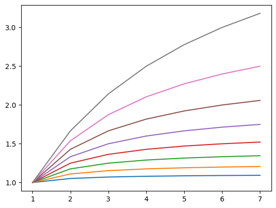

Scaling-up: batch processing on the cluster with pyjeo
Summary of computing concepts
High Performance (HPC) and High Throughput Computing (HTC)
High Performance (HPC): Tightly-coupled, parallel applications requiring dedicated software. Need for low-latency networks that are designed for passing short messages very quickly between compute nodes (Message Passing Interface).
High Throughput Computing (HTC): large number of loosely-coupled tasks (also called an embarrassingly parallel workload).
Parallel processing
Embarrassingly parallel processing with tiling: Exercise 1
multi-core processing with openMP (multi-threading): Exercise 2
Embarrassingly parallel processing with tiling
Using pyjeo docker image in Surf with EasyBuild
Step 1: load modules
module load Python/3.9.6-GCCcore-11.2.0
module load LibTIFF/4.3.0-GCCcore-11.2.0
module load libgeotiff/1.7.0-GCCcore-11.2.0
module load uthash/2.3.0-foss-2021b
module load shapelib/1.6.0-foss-2021b
module load GSL
module load GDAL
module load jsoncpp/1.9.5-foss-2021b
module load fann/2.2.0-foss-2021b
module load SWIG/4.2.1-foss-2021b
export PYTHONPATH=""
Step 2: pip install wheels
python -m venv pyjeo-venv
source $HOME/pyjeo-venv/bin/activate
pip install numpy==1.26.4 --force-reinstall
pip install /project/geocourse/Software/wheels/jiplib-1.1.3-py3-none-any.whl
pip install /project/geocourse/Software/wheels/pyjeo-1.1.8-py3-none-any.whl
Copy These 4 files to your local directory $HOME/scripts
cp /project/geocourse/Software/scripts/pyjeo_calculate_ndvi.sh $HOME/scripts/pyjeo_calculate_ndvi.sh
cp /project/geocourse/Software/scripts/pyjeo_calculate_ndvi.py $HOME/scripts/pyjeo_calculate_ndvi.py
cp /project/geocourse/Software/scripts/pyjeo_extract_parcels.sh $HOME/scripts/pyjeo_extract_parcels.sh
cp /project/geocourse/Software/scripts/pyjeo_extract_parcels.py $HOME/scripts/pyjeo_extract_parcels.py
wget https://raw.githubusercontent.com/selvaje/SE_data/master/exercise/PKTOOLS/pyjeo_calculate_ndvi.sh
wget https://raw.githubusercontent.com/selvaje/SE_data/master/exercise/PKTOOLS/pyjeo_calculate_ndvi.py
wget https://raw.githubusercontent.com/selvaje/SE_data/master/exercise/PKTOOLS/pyjeo_extract_parcels.sh
wget https://raw.githubusercontent.com/selvaje/SE_data/master/exercise/PKTOOLS/pyjeo_extract_parcels.py
Replace geocourse-teacher03 with your user name
Exercises
Exercise 1: Create NDVI from Sentinel-2 composite
Two spectral bands: red (B04), near infrared (B08)
Spatial region: Flanders (Belgium)
Acquisition time: July - August 2021 maximum NDVI Composite
Tiling mechanism in pyjeo
jim = pj.Jim('/path/to/large_image.vrt', tileindex = x, tiletotal = 64)
Will automatically cut the large image into tiles and load the xth tile
You should tell the scheduler to run your script for each tileindex from 0 to tileindex-1
Run the script as:
sbatch pyjeo_calculate_ndvi.sh
Tips
write your script with command line arguments (argparse)
progam verbose mode to see what is going on
write to /scratch and move to your destination
clean up temporary files (if not automatic)
tile when possible (using the tiling mechanism in pyjeo)
Exercise 2: Extract polygons from raster image
35317 polygons with parcel boundaries
Spatial region: Flanders (Belgium)
Calculate zonal statistics for each parcel (
["mean", "stdev", "sum"])Using multi-threading mechanism implemented in pyjeo
Adapt -c 1 for (1, 2, 3, 4, 5, 6, 7, 8)
#SBATCH -N 1 -c 1 -n 1
Observe Amdahls law: Amdahl’s law will always be a limiting factor for speedup: 1/((1-P) + P/N)
Where: - N No of cores in the gpu. - P: Parallelizable portion of code’s execution time of the program. - 1-P: serial code in the program.
[1]:
from matplotlib import pyplot as plt
import numpy as np
N = np.arange(1,8)
ys = [1/((1-P/10) + P/10.0/N) for P in range(1, 9)]
for i, y in enumerate(ys):
plt.plot(N, y, label=str(i))
plt.show()

Estimate the speedup and P for the extract function